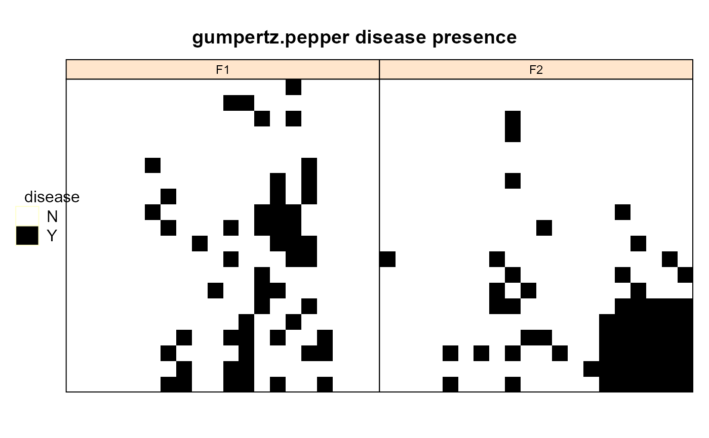
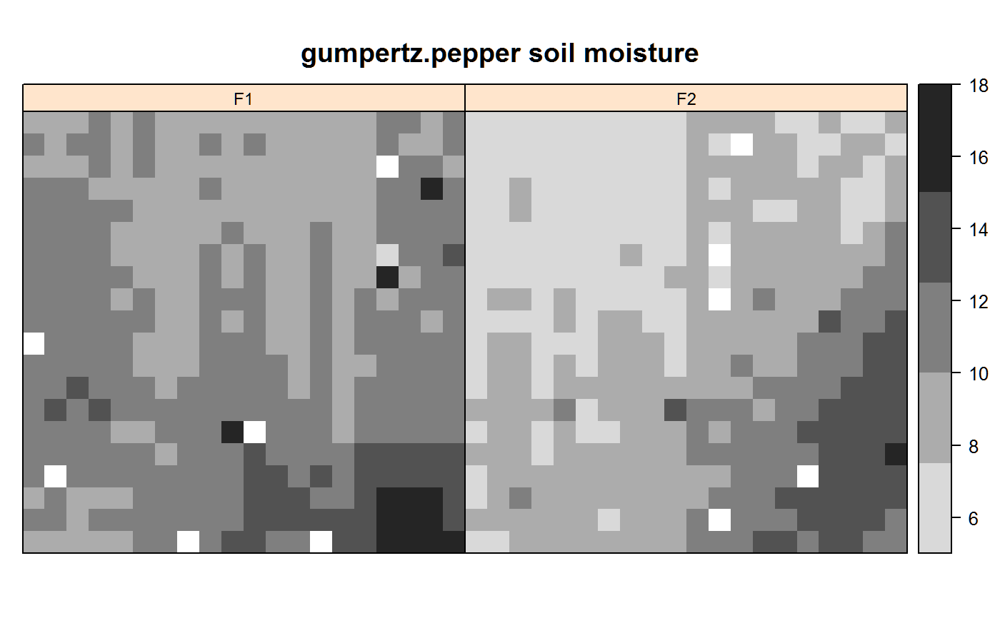
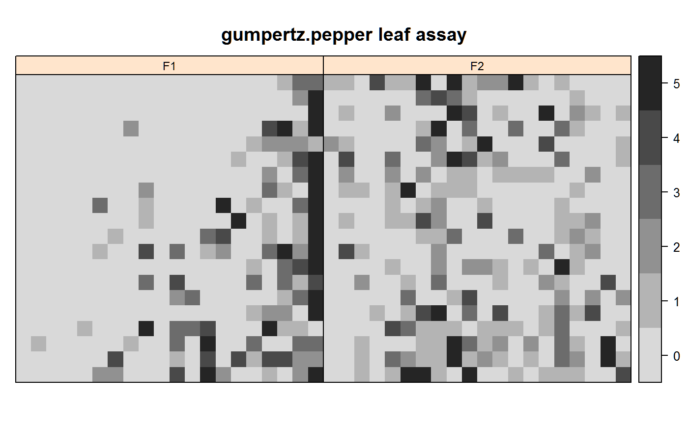

gumpertz.pepper.RdPhytophtera disease incidence in a pepper field
A data frame with 800 observations on the following 6 variables.
fieldfield factor, 2 levels
rowx ordinate
quadraty ordinate
diseasepresence (Y) or absence (N) of disease
watersoil moisture percent
leafleaf assay count
Each field is 20 rows by 20 quadrates, with 2 to 3 bell pepper plants per plot. If any plant was wilted, dead, or had lesions, the Phytophthora disease was considered to be present in the plot. The soil pathogen load was assayed as the number of leaf disks colonized out of five. In field 2, the pattern of disease presence appears to follow soil water content. In field 1, no obvious trends were present.
Gumpertz et al. model the presence of disease using soil moisture and leaf assay as covariates, and using disease presence of neighboring plots as covariates in an autologistic model.
Marcia L. Gumpertz; Jonathan M. Graham; Jean B. Ristaino (1997). Autologistic Model of Spatial Pattern of Phytophthora Epidemic in Bell Pepper: Effects of Soil Variables on Disease Presence. Journal of Agricultural, Biological, and Environmental Statistics, Vol. 2, No. 2., pp. 131-156.
Used with permission of Marcia Gumpertz. Research funded by USDA.
library(agridat) data(gumpertz.pepper) dat <- gumpertz.pepper # Gumpertz deletes two outliers dat[ dat$field =="F1" & dat$row==20 & dat$quadrat==10, 'water'] <- NA dat[ dat$field =="F2" & dat$row==5 & dat$quadrat==4, 'water'] <- NA # Horizontal flip dat <- transform(dat, row=21-row) # Disease presence. Gumpertz fig 1a, 2a. libs(desplot) grays <- colorRampPalette(c("#d9d9d9","#252525")) desplot(disease ~ row*quadrat|field, data=dat, col.regions=c('white','black'), aspect=1, # uncertain aspect main="gumpertz.pepper disease presence", )# Soil water. Gumpertz fig 1b, 2b desplot(water ~ row*quadrat|field, data=dat, col.regions=grays(5), aspect=1, # uncertain aspect at=c(5,7.5,10,12.5,15,18), main="gumpertz.pepper soil moisture")# Leaf assay. Gumpertz fig 1c, 2c desplot(leaf ~ row*quadrat|field, data=dat, col.regions=grays(6), at=c(0,1,2,3,4,5,6)-.5, aspect=1, # uncertain aspect main="gumpertz.pepper leaf assay", )# Use the inner 16x16 grid of plots in field 2 dat2 <- droplevels(subset(dat, field=="F2" & !is.na(water) & row > 2 & row < 19 & quadrat > 2 & quadrat < 19)) m21 <- glm(disease ~ water + leaf, data=dat2, family=binomial) coef(m21) # These match Gumpertz et al table 4, model 1#> (Intercept) water leaf #> -9.1019623 0.7059993 0.4603931## (Intercept) water leaf ## -9.1019623 0.7059993 0.4603931 dat2$res21 <- resid(m21) if(0){ libs(desplot) desplot(res21 ~ row*quadrat, data=dat2, main="gumpertz.pepper field 2, model 1 residuals") # Still shows obvious trends. Gumpertz et al add spatial covariates for # neighboring plots, but with only minor improvement in misclassification }